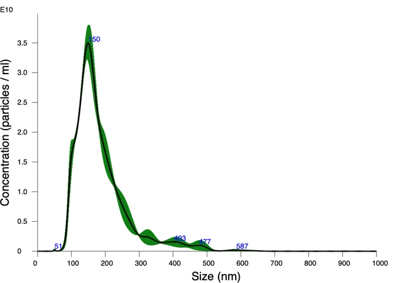

高生物相容性 High Bio-compatibility
哺乳動物天然雙層脂質囊泡，與人體皮膚及毛囊細胞具高親和力，能溫和傳遞修護訊號。 Mammalian lipid bilayer structure delivers high affinity to human dermal and follicular cells, naturally facilitating signaling.
Jewelon Bio 專注於高純度牛奶外泌體（Milk Exosomes）原料研發與 CDMO 委託服務。結合艾峰生技（Aixon Bio, Inc.）獨家膜分離技術，並與台灣胞外體學會（TSEV）創會理事長沈湯龍教授團隊深度產學合作。產品對應 INCI 名稱 MILK EXOSOMES（MONO ID: 35079），客戶可直接以此名稱標示成分，為品牌商與代工廠提供純淨且可規模量產的核心成分。 Jewelon Bio specializes in high-purity Milk Exosome production and scalable CDMO services. Powered by Aixon Bio's patent-pending membrane separation technology and an academic partnership with Prof. Tang-Long Shen (Founder & Founding President of TSEV). Our ingredient corresponds to the established INCI name MILK EXOSOMES (MONO ID: 35079), so customers can list it directly on their ingredient labels.
乳汁天生為了傳遞生物活性訊號而存在。相較人源細胞的倫理與高昂培養成本、植物源與人體細胞膜構造之差異，高純度天然牛奶外泌體提供了高相容、極安定且能大規模量產的最佳解方。 Milk is nature's intrinsic carrier of bioactive signaling molecules. Compared to the ethical constraints of human-derived cells and structural differences in plant-derived vesicles, high-purity milk exosomes deliver optimal biocompatibility, formulation robustness, and scalable production.
哺乳動物天然雙層脂質囊泡，與人體皮膚及毛囊細胞具高親和力，能溫和傳遞修護訊號。 Mammalian lipid bilayer structure delivers high affinity to human dermal and follicular cells, naturally facilitating signaling.
獨家溫和前處理工藝去除酪蛋白過敏原，不破壞外泌體活性。 Proprietary gentle preprocessing eliminates casein allergens while preserving intact exosome bioactivity.
產品對應 INCI 名稱 MILK EXOSOMES（MONO ID: 35079），客戶可直接用於成分標示；終端宣稱依各市場法規辦理。 Corresponds to the existing INCI name MILK EXOSOMES (MONO ID: 35079), so customers can use it on ingredient lists. Final claims follow each market's regulations.
生乳供應充沛，結合艾峰生技膜分離技術與 TFF 切向流過濾，兼顧成本效益與穩定的批次品質。 Abundant raw milk combined with Aixon membrane separation and TFF filtration delivers cost efficiency and consistent batch quality.
以下為 Jewelon 牛奶外泌體原料的關鍵特性數據；COA、MSDS 等技術文件可依客戶需求提供。 Key characterization data for Jewelon Milk Exosomes. COA, MSDS and other technical documents are available on request.
| 對應 INCI 名稱 Corresponding INCI Name | MILK EXOSOMES MONO ID: 35079 |
|---|---|
| 來源與材質 Source & Origin | 天然可追溯生乳（Raw Bovine Milk） Traceable Natural Raw Bovine Milk |
| 顆粒濃度 (NTA) Particle Concentration (NTA) | > 10¹² / mL |
| 主峰粒徑 (NTA) Peak Mode (NTA) | ~150 nm（典型單峰集中分佈） |
| 標誌蛋白 (Western Blot) EV Biomarkers (WB) | CD9、CD81、CD63、TSG101 陽性；Calnexin 陰性（無內質網與細胞碎片） CD9, CD81, CD63, TSG101 Positive; Calnexin Negative (Debris-free) |
| 形態結構 (TEM) Morphology (TEM) | 典型圓形/杯狀雙層膜完整微囊泡（0.1 nm 電顯驗證） Characteristic cup-shaped intact lipid bilayer vesicles (0.1 nm TEM) |
| 酪蛋白處理 Casein Processing | 獨家溫和前處理去除酪蛋白過敏原，保留完整外泌體活性 Casein allergens removed via gentle preprocessing; intact exosome bioactivity preserved |
| 技術文件 Documents | COA、MSDS（依客戶需求提供） COA, MSDS (available on request) |
Nanoparticle Tracking Analysis 粒徑分佈（高純度單峰均一囊泡） Nanoparticle Tracking Analysis (Uniform Monomodal Vesicles)

從專屬純化製程建立到 NTA、TEM、Western Blot 鑑定與多體學分析，Jewelon 協助客戶省下昂貴儀器資本支出，加速研發成果商業化。 From bespoke purification process development to NTA, TEM, Western Blot characterization, and multi-omics analysis, Jewelon helps partners avoid massive CapEx and accelerate time-to-market.
針對客戶自有原料（細胞培養液、乳源、天然萃取物）建立客製化純化與濃縮工藝，優化產率與回收率。 Customized isolation and concentration protocols for your proprietary inputs (cell culture media, bio-fluids, botanicals) with yield optimization.
提供外泌體特性鑑定的三大關鍵檢測，並支援進階多體學 MOA 分析，出具完整 QC 檢測報告。 Three core exosome characterization assays plus advanced multi-omics MOA profiling, delivered in a complete QC report.
確認來源物料、預期純度與終端規格要求。Evaluate input materials, purity targets, and application specs.
前處理、艾峰生技膜分離與 TFF 切向流濃縮。Pretreatment, Aixon membrane separation, and TFF concentration.
執行 NTA、TEM、Western Blot 全方位分析。Comprehensive NTA, TEM, and Western Blot characterization.
交付純化樣品與完整 QC 檢測報告。Delivery of purified samples along with a complete QC report.
我們拒絕概念添加，堅持以頂尖技術與學術嚴謹度把關每一滴外泌體的品質。 We refuse symbolic additions, adhering to rigorous engineering and academic validation for every droplet of exosome raw material.
國立臺灣大學教授、台灣胞外體學會（TSEV）創會理事長。深耕外泌體細胞生物學機制，以多體學分析深入掌握作用機制（MOA），解析原料生物活性與修護路徑。 Professor at National Taiwan University, Founder and Founding President of Taiwan Society for Extracellular Vesicles (TSEV). Leading multi-omics research to elucidate Mechanism of Action (MOA) and signaling pathways.
艾峰生技的膜分離技術（專利申請中）以膜材進行外泌體分離與純化，搭配 TFF 切向流過濾，在濃縮與洗滌過程中降低阻塞、維持高回收率並保護囊泡雙層膜結構，確保原料活性與批次間品質穩定。 Aixon Bio's patent-pending membrane technology separates and purifies exosomes through specialized membranes. Paired with TFF, it reduces fouling and maintains high recovery during concentration and washing, protecting the vesicle bilayer and keeping quality consistent from batch to batch.
INCI 名稱 MILK EXOSOMES（MONO ID: 35079）已收錄於國際化妝品原料命名系統。Jewelon 生產的牛奶外泌體對應此名稱，客戶可直接用於成分標示；各市場的上市登記與功效宣稱仍依當地法規辦理。 The INCI name MILK EXOSOMES (MONO ID: 35079) is listed in the international cosmetic ingredient nomenclature. Jewelon's milk exosomes correspond to this name, so customers can use it on ingredient labels. Market registration and product claims still follow local regulations.
圖示為 Jewelon 團隊開發之概念樣品（10mL 棕色避光安瓶精華），實證高純度牛奶外泌體在水相精華與頭皮護理液中擁有出色的分散相容性、均勻透明度與長期物理安定性。 Pictured is a laboratory concept prototype developed by Jewelon (10mL amber protective ampoule serum), demonstrating the exceptional dispersibility, clarity, and physical stability of Milk Exosomes in water-based skincare and scalp tonics.
無論是索取原料樣品、COA／MSDS 技術文件，或洽談客製 CDMO 製程開發與檢測委託，歡迎填寫需求，技術團隊將於 2 個工作天內聯繫。 Whether you wish to request samples, COA/MSDS documents, or discuss custom CDMO development, please submit your request. Our team will respond within 2 business days.
技術團隊將於 2 個工作天內主動與您聯繫並寄送樣品與資料。 Our technical team will follow up and arrange sample delivery within 2 business days.